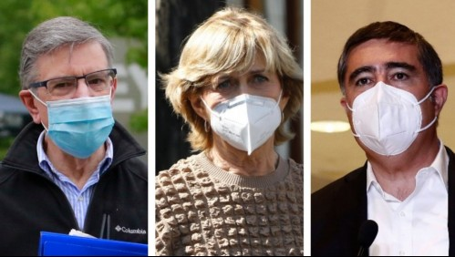

Lavín, Matthei y Desbordes buscan "un gran acuerdo nacional" tras aprobación del tercer retiro
Valentina Flores │ 23 de Abril, 2021 │ Nacional │ Santiago, Chile

Los precandidatos presidenciales del oficialismo Joaquín Lavín, Evelyn Matthei y Mario Desbordes, llamaron a los sectores políticos a llegar a un acuerdo, luego de que este viernes fuera despachado a ley desde el Congreso el proyecto del tercer retiro del 10% de los fondos de AFP.
La iniciativa todavía no podrá convertirse en ley, por el requerimiento presentado por el Gobierno en el Tribunal Constitucional (TC). Es por eso que desde la oposición y el oficialismo le han solicitado al Ejecutivo retirar la acción, patrocinar un retiro a las cuentas previsionales o buscar otro mecanismo para poder llegar a las personas que no han accedido a los beneficios entregados por el Estado.
Una petición que podría ser acogida por el Gobierno, pues estarían estudiando la opción de presentar un proyecto propio de tercer retiro, paralelo al aprobado en el Congreso.
¿Qué dijo Lavín?
"Lo importante es llegar rápido a un acuerdo, que signifique un alivio masivo, universal, para los chilenos, y muy especial para los de clase media que hasta ahora no han recibido los beneficios del Gobierno", aseveró el alcalde de Las Condes.
¿Qué dijo Matthei?
En tanto, Matthei dijo que: "Creo que es el momento de llegar a acuerdos. En Chile hay mucha angustia, hay muchas personas que han perdido el empleo. Hay mucha incertidumbre frente a lo que viene, tanto la pandemia como en la parte económica. Por eso que creo que las personas que tienen un liderazgo, les hace muy bien el poder conversar".
"Me alegro enormemente que la presidenta del Senado (Yasna Provoste) haya abierto la puerta para esta conversación. Espero que nuestro sector entienda que al final todos vamos a tener que hacer sacrificios y conceder cosas, de tal manera de poder llegar a acuerdos que permitan a los chilenos un respiro", agregó.
Además, recalcó que: "Es muy importante también encontrar fórmulas en que sea el Estado el que vaya en ayuda de las personas que lo necesitan y no que estén agotando sus ahorros, porque el día de mañana, cuando tengan que jubilarse, van a sufrir las consecuencias. Así que, por el bien de Chile, espero que esto prospere".
El llamado de Desbordes
"Hay miles de familias chilenas de clase media, también de sectores vulnerables, y miles de pymes que lo están pasando muy mal y nos piden 'pónganse de acuerdo y dejen de pelear'. Es lo que nos está pidiendo la gente a gritos y creo que es lo que tenemos que hacer: Un gran acuerdo nacional, lo más transversal posible, para encontrar juntos la ayuda que beneficie a aquellos que lo están pasando muy mal", solicitó Desbvordes.